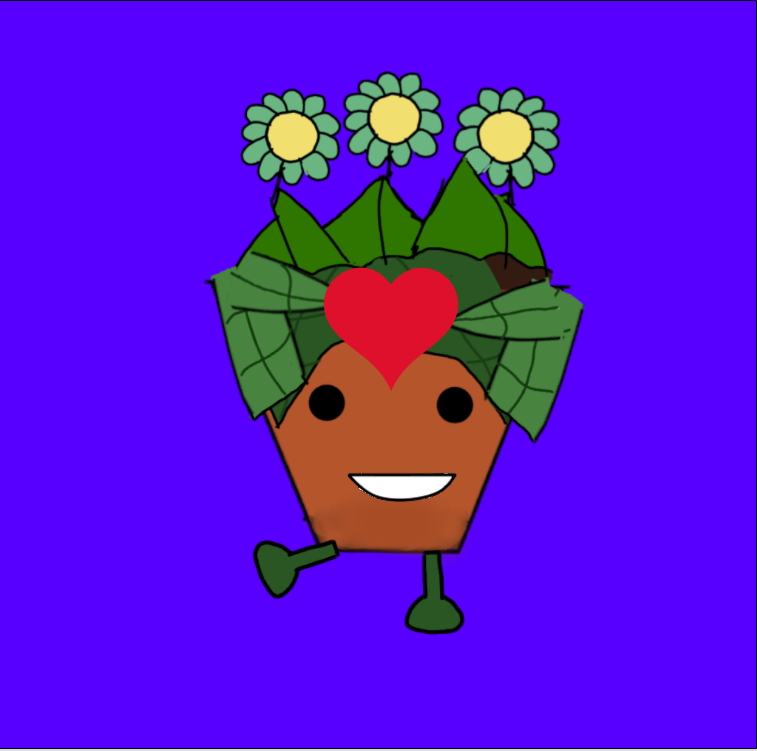

Amani signifie la paix. Avec nos produits, nous vous offrons un moment en dehors de tous les désagréments du quotidien, un moment où seul vous et votre bien-être sont importants. Tout à propos d’Amani, des couleurs aux produits, est soigneusement sélectionné afin de créer une ambiance aussi agréable que possible
À l’origine d’Amani, il y a 4 jeunes mini-entrepreneurs qui ont décidé de se lancer dans cette aventure grâce à l’aide de l’ASBL LJE. Deux causes nous tenaient à cœur : l’écologie et le bien-être. Alors, nous avons combiné ces deux valeurs dans notre slogan : prenez soin de vous et de la planète. Amani vous propose donc des produits bien-être écologiques. Nos bougies et nos sels de bain sont concoctés par nos soins. Nos savons viennent de l'Arbre à savons, une savonnerie artisanale à Louvain-la-Neuve. Quant à nos parfums, ils viennent d’un producteur français. Pour chaque produit, nous vous proposons deux alternatives : une senteur prononcée et une senteur légère. Ainsi, il y en a pour tous les goûts. En plus de cela, tous nos contenants peuvent être réutilisés. N’hésitez à nous suivre sur nos réseaux pour être au courant de nos ventes et faire la rencontre de Maua, notre mascotte !